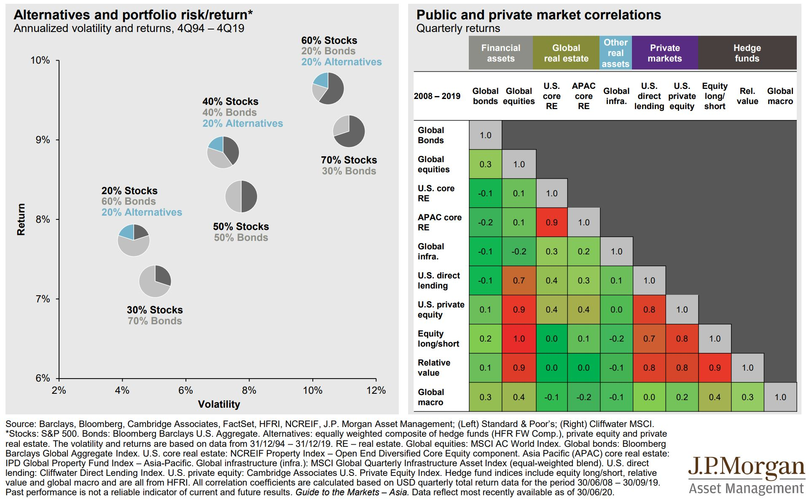

Strategic Asset Allocation
I am more comfortable with top-down investment style. The first step to construct the portfolio is asset allocation. In this blog, I construct the equities-bonds portfolio and compare traditional 60/40 portfolio with risk parity portfolio. My ideas come from the final question in midterm of Investment Fundamental course which is taught by professor Roberto Gomez Cram. My data comes from J.P. Morgan Long-Term Capital Market Assumptions.
Data initialization
assets <- read_excel("C:/Data Analytics/my_website/content/projects/SAA/assets_risk_return.xlsx")
glimpse(assets)## Rows: 59
## Columns: 4
## $ Assets <chr> "U.S. Inflation", "U.S. Cash", "U.S. Intermediate...
## $ Class <chr> "Fixed Income", "Fixed Income", "Fixed Income", "...
## $ Expected_Return <dbl> 2.0, 1.6, 2.2, 0.3, 2.4, 2.8, 3.0, 2.6, 2.2, 3.8,...
## $ Annual_Volatility <dbl> 1.40, 0.46, 3.45, 11.02, 5.39, 3.42, 2.46, 1.93, ...# To make sure the right order
assets$Class<-factor(assets$Class,levels=c("Fixed Income","Equities","Alternatives"))
# Create the mean-variance plot
assets %>%
ggplot(aes(x=Annual_Volatility,y=Expected_Return,colour=Class))+
geom_point(size=1)+
geom_text_repel(aes(x=Annual_Volatility,y=Expected_Return,label=Assets),size=1.8,colour="Black")+
scale_colour_hue(NULL)+
labs(title="Risk and return characteristics of different asset classes",
subtitle="Based on long-term market assumption",
x="Volatility",
y="Compound return (%)",
caption="Source: LTCMAs, J.P. Morgan Asset Management Multi-Asset Solutions; data as of April 2020.")+
theme_minimal(base_size=8)
Traditional 60/40 portfolio
The ultimate purpose of asset allocation is to diversify risks. The simplest way to diversify is to allocate between equities and bonds. I first calculate the portfolio that only contains equities and bonds, based on AC World Equity and World Government Bonds hedged. To calculate the portfolio volatility, we need correlation among different assets, so I first load the covariance data.
# Load covariance data
covariance <- read_excel("C:/Data Analytics/my_website/content/projects/SAA/assets_covariance.xlsx")
glimpse(covariance)## Rows: 43
## Columns: 44
## $ Assets <chr> "U.S. Inflation", "U.S. Cas...
## $ `U.S. Inflation` <dbl> 1.4000, 0.0722, -0.4835, -0...
## $ `U.S. Cash` <dbl> 0.0722, 0.4600, 0.2645, 0.1...
## $ `U.S. Intermediate Treasuries` <dbl> -0.483, 0.265, 3.450, 4.933...
## $ `U.S. Long Treasuries` <dbl> -0.746, 0.113, 4.933, 11.02...
## $ TIPS <dbl> 0.275, 0.110, 2.544, 4.316,...
## $ `U.S. Aggregate Bonds` <dbl> -0.394, 0.125, 2.782, 5.034...
## $ `U.S. Securitized` <dbl> -0.278, 0.149, 2.156, 3.593...
## $ `U.S. Short Duration Government/Credit` <dbl> -0.312, 0.339, 1.987, 2.075...
## $ `U.S. Long Duration Government/Credit` <dbl> -0.687, 0.000, 3.917, 9.131...
## $ `U.S. Inv Grade Corporate Bonds` <dbl> -0.2600, -0.0497, 1.8138, 4...
## $ `U.S. Long Corporate Bonds` <dbl> -0.558, -0.107, 2.278, 6.26...
## $ `U.S. High Yield Bonds` <dbl> 0.441, -0.214, -1.385, -2.1...
## $ `U.S. Leveraged Loans` <dbl> 1.105, -0.261, -2.705, -3.9...
## $ `World Government Bonds hedged` <dbl> -0.593, 0.117, 2.698, 4.879...
## $ `World Government Bonds` <dbl> -0.300, 0.172, 3.109, 4.293...
## $ `World ex-U.S. Government Bonds hedged` <dbl> -0.6066, 0.0811, 2.2852, 4....
## $ `World ex-U.S. Government Bonds` <dbl> -0.268, 0.153, 2.889, 3.662...
## $ `Emerging Markets Sovereign Debt` <dbl> 0.1026, -0.0392, 0.9667, 1....
## $ `Emerging Markets Local Currency Debt` <dbl> 0.248, 0.237, 0.972, 0.695,...
## $ `Emerging Markets Corporate Bonds` <dbl> 0.4066, -0.0971, 0.2659, 0....
## $ `U.S. Muni 1-15 Yr Blend` <dbl> -0.2520, 0.0241, 1.4835, 2....
## $ `U.S. Muni High Yield` <dbl> 0.961, -0.147, -0.352, 0.89...
## $ `U.S. Large Cap` <dbl> 0.224, -0.154, -2.180, -3.7...
## $ `U.S. Mid Cap` <dbl> 0.4299, -0.1917, -2.4747, -...
## $ `U.S. Small Cap` <dbl> 0.258, -0.236, -2.749, -4.7...
## $ `Euro Area Large Cap` <dbl> 0.1645, 0.0314, -1.8074, -3...
## $ `Japanese Equity` <dbl> 0.0455, -0.2348, -1.8579, -...
## $ `Hong Kong Equity` <dbl> -0.0530, 0.0608, -1.4974, -...
## $ `UK Large Cap` <dbl> 0.4370, -0.0557, -2.2867, -...
## $ `EAFE Equity hedged` <dbl> 0.0000, -0.1250, -2.6020, -...
## $ `EAFE Equity` <dbl> 0.2426, -0.0556, -1.9039, -...
## $ `Emerging Markets Equity` <dbl> 0.381, 0.156, -1.707, -3.05...
## $ `AC Asia ex-Japan Equity` <dbl> 0.0540, 0.0929, -1.5263, -2...
## $ `AC World Equity` <dbl> 0.279, -0.080, -2.045, -3.6...
## $ `U.S. Equity Value Factor` <dbl> 0.140, -0.241, -2.273, -4.0...
## $ `U.S. Equity Momentum Factor` <dbl> 0.4509, -0.1809, -2.3356, -...
## $ `U.S. Equity Quality Factor` <dbl> 0.213, -0.147, -1.875, -3.2...
## $ `U.S. Equity Minimum Volatility Factor` <dbl> 0.1197, -0.1601, -1.3153, -...
## $ `U.S. Equity Dividend Yield Factor` <dbl> 0.1774, -0.2034, -1.6709, -...
## $ `U.S. Equity Diversified Factor` <dbl> 0.342, -0.196, -1.948, -3.1...
## $ `U.S. Convertible Bond hedged` <dbl> 0.308, -0.199, -1.816, -2.9...
## $ `Global Convertible Bond` <dbl> 0.152, -0.131, -1.913, -2.9...
## $ `Global Credit Sensitive Convertible` <dbl> 0.4696, -0.0538, -0.6389, -...# mean return of asset
r_equities=assets[assets$Assets=="AC World Equity","Expected_Return"]
r_bonds=assets[assets$Assets=="World Government Bonds hedged","Expected_Return"]
# standard deviation of portfolio
sigma_equities=assets[assets$Assets=="AC World Equity","Annual_Volatility"]
sigma_bonds=assets[assets$Assets=="World Government Bonds hedged","Annual_Volatility"]
cov_equities_bonds=covariance[covariance$Assets=="AC World Equity","World Government Bonds hedged"]# Construct equities-bonds portfolio
i=0
while(i<=1){
r=r_equities*i+r_bonds*(1-i)
sigma=sqrt(i^2*sigma_equities^2+(1-i)^2*sigma_bonds^2+i*(1-i)*2*cov_equities_bonds)
assets<-rbind(assets,data.frame(Assets=paste(round(i*100),"/",round(100-i*100)),Class="Portfolio",Expected_Return=r,Annual_Volatility=sigma))
i=i+0.1
}The traditional 60/40 portfolio - the mix of 60% equities and 40% bonds - has been a mainstay of investment strategy for decades. Let’s see 60/40 portfolio’s risk-return profile.
# Filter necessary data
equities_bonds<-assets %>%
filter(Class=="Portfolio"|
Assets=="AC World Equity"|
Assets=="World Government Bonds hedged")
# Create the plot
plot1<-ggplot(equities_bonds,aes(x=Annual_Volatility,y=Expected_Return))+
# Line of efficient frontier
geom_line()+
# Point of 60/40 portfolio, equities, and bonds
geom_point(data=equities_bonds[equities_bonds$Assets=="60 / 40",],size=3,colour="red")+
geom_point(data=equities_bonds[equities_bonds$Assets=="AC World Equity",],size=2)+
geom_point(data=equities_bonds[equities_bonds$Assets=="World Government Bonds hedged",],size=2)+
# Add label to points
geom_text_repel(data=equities_bonds[equities_bonds$Assets=="60 / 40",],aes(x=Annual_Volatility,y=Expected_Return,label=Assets),colour="Black",vjust=-1)+
geom_text_repel(data=equities_bonds[equities_bonds$Assets=="AC World Equity",],aes(x=Annual_Volatility,y=Expected_Return,label=Assets),colour="Black")+
geom_text_repel(data=equities_bonds[equities_bonds$Assets=="World Government Bonds hedged",],aes(x=Annual_Volatility,y=Expected_Return,label=Assets),colour="Black",hjust=-0.05)+
# Set title, and axis label
labs(title="Equities-Bonds Portfolio",
x="Volatility",
y="Compounded return (%)")+
theme_minimal(base_size=9)
plot1
Risk Parity
After 2008 financial crisis, Risk Parity become very popular, given that it performed better during the crisis than more traditional portfolios. I thus also setting up a Risk Parity portfolio of equities and bonds where the weight on each asset class is inversely proportional to its volatility.
Denote w1 as proportion of equities and w2 as proportion of bonds. We have w1+w2=1. To construct the risk parity portfolio, we have w1:w2=volatility(bonds):volatility(equities).
# Solve the equations
w2=1/(1+sigma_bonds/sigma_equities)
w1=1-w2
# Calculate portfolio's risk and return
r=r_equities*w1+r_bonds*w2
sigma=sqrt(w1^2*sigma_equities^2+w2^2*sigma_bonds^2+w1*w2*2*cov_equities_bonds)
# Construct Risk Parity Portfolio
equities_bonds<-rbind(equities_bonds,data.frame(Assets="Unlevered Risk Parity",Class="Portfolio",Expected_Return=r,Annual_Volatility=sigma))Let’s see Risk Parity Portfolio’s risk-return profile:
plot2<-plot1+
geom_point(data=equities_bonds[equities_bonds$Assets=="Unlevered Risk Parity",],size=3,colour="blue")+
geom_text_repel(data=equities_bonds[equities_bonds$Assets=="Unlevered Risk Parity",],aes(x=Annual_Volatility,y=Expected_Return,label=Assets),colour="Black",hjust=-0.05)
plot2
Next I add leverage to unlevered Risk Parity Portfolio with use of riskless borrowing. Firstly, add riskfree assets to the dataframe.
# According to J.P. Morgan's long term market assumption, i set riskfree rate to 1.6%, with no volatility
equities_bonds<-rbind(equities_bonds,data.frame(Assets="Cash",Class="Riskfree",Expected_Return=1.60,Annual_Volatility=0))# Add `cash` to the plot
plot3<-plot2+
geom_point(data=equities_bonds[equities_bonds$Assets=="Cash",],size=2,colour="black")+
geom_text_repel(data=equities_bonds[equities_bonds$Assets=="Cash",],aes(x=Annual_Volatility,y=Expected_Return,label=Assets),colour="Black",hjust=-0.05)
plot3
# Add leverage to Risk Parity portfolio to get the same standard deviation as the 60/40 portfolio
levered_sigma=equities_bonds[equities_bonds$Assets=="60 / 40","Annual_Volatility"]
unlevered_sigma=equities_bonds[equities_bonds$Assets=="Unlevered Risk Parity","Annual_Volatility"]
leverage=levered_sigma/unlevered_sigma
# Calculate levered annualized return
unlevered_r=equities_bonds[equities_bonds$Assets=="Unlevered Risk Parity","Expected_Return"]
rf=equities_bonds[equities_bonds$Assets=="Cash","Expected_Return"]
levered_r=unlevered_r*leverage-(leverage-1)*rf# Add portfolio to dataframe
equities_bonds<-rbind(equities_bonds,data.frame(Assets="levered Risk Parity",Class="Portfolio",Expected_Return=levered_r,Annual_Volatility=levered_sigma))# Add point to plot
plot4<-plot3+
geom_point(data=equities_bonds[equities_bonds$Assets=="levered Risk Parity",],size=3,colour="blue")+
geom_text_repel(data=equities_bonds[equities_bonds$Assets=="levered Risk Parity",],aes(x=Annual_Volatility,y=Expected_Return,label=Assets),colour="Black",hjust=-0.05)
plot4
As we can see, in this case, risk parity is no better than 60/40 portfolio. With the same volatility, risk parity generate less return. When adding leverage to the portfolio, Sharpe ratio does not change. Only when unlevered risk parity portfolio has a higher Sharpe ratio than 60/40 portfolio, levered risk parity is more attractive than 60/40. However, Sharpe ratio is not the only evaluation indicator of asset allocation. When both portfolios are on the efficient frontier, Which portfolio is better depends on investor’s utility.
I also want to caution that all these strategies are actually built on mathematical model with assumptions. I use mean and standard deviation as the proxy for risk and return and I assume these statistics (mean, standard deviation, and correlation) are stable. This is far from reality. When the correlation between equities and bonds become stronger, the risk parity strategy may fall. When the pandemic outbreak in April, risk-parity investment strategy unravelled with both bonds and stocks plummetted
Now let’s come back to the 60/40 portfolio. The increasing correlation between stocks and bonds is also the shortcoming of this strategy. Moreover, when covid-19 outbreak, we have entered a new normal with low yield. In this case, low bond yields will not help offset a poor performance from the share market
Under such circumstances, I see two mainstreams to improve asset allocation strategy. One is to switch from “asset allocation” to “factor allocation”. The other is to diversify into alternatives. These assets have low correlation with traditional assets. On the one hand, Adding alternatives to 60/40 portfolio will improve its risk-return profile. On the other hand, diversifying into alternatives may protect portfolio from systematic market crash.

Reference
[1] Jennifer Bender, Jerry Le Sun, and Ric Thomas, “Asset Allocation vs. Factor Allocation – Can we Build a Unified Method?”, The Journal of Portfolio Management, 2019, vol. 45, no. 2, pp. 9-22.
[2] “How risk-parity investment strategies unravelled”, The Economist, 25 April 2020 edition.
[3] Michael Mackenzie, “Investors wonder if the 60/40 portfolio has a future”, Financial Times, 22 September 2020.
[4] J.P. Morgan Asset Management, “Long-term capital market assumptions”, 30 September 2020.